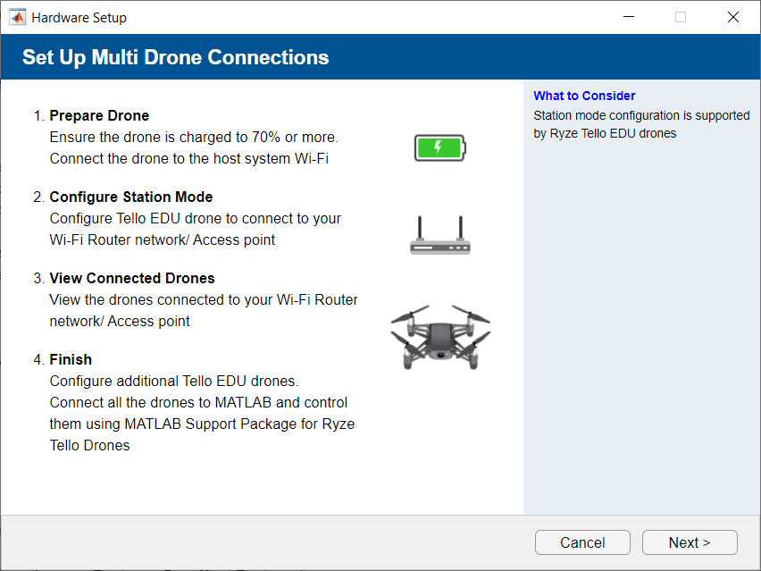
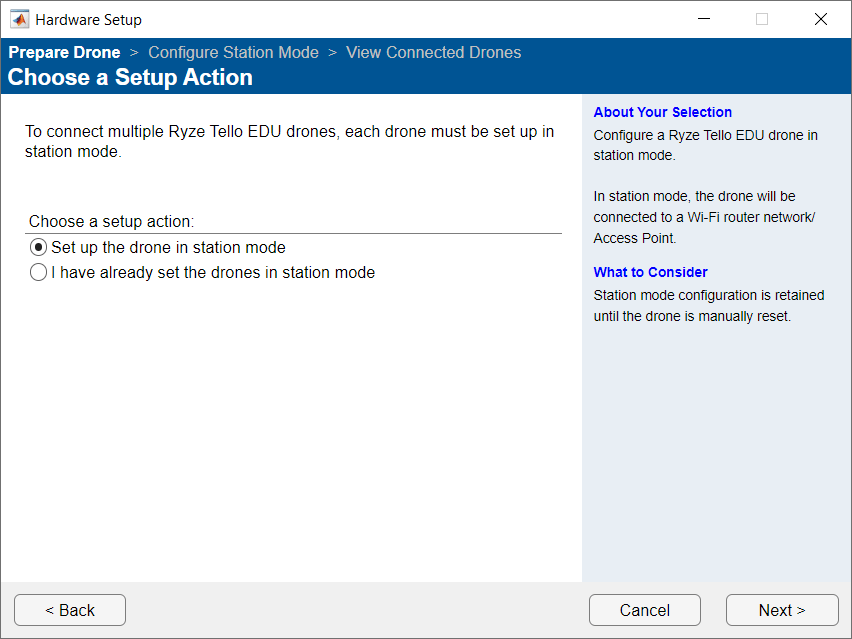
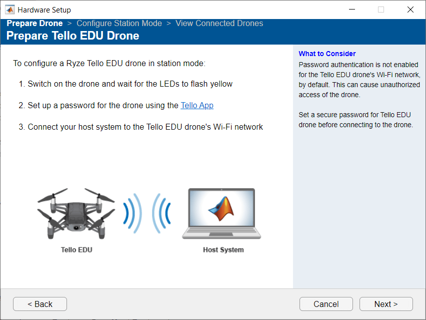
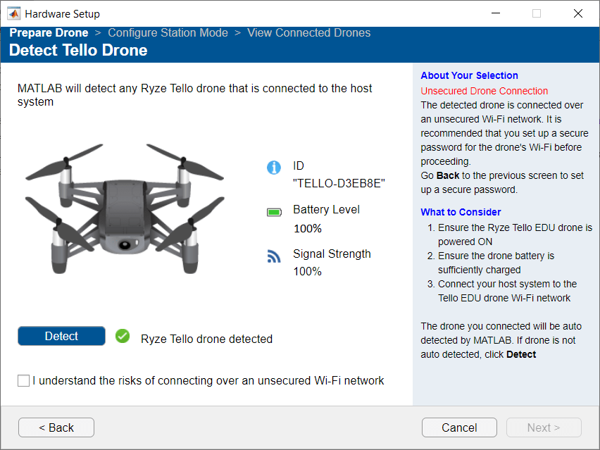
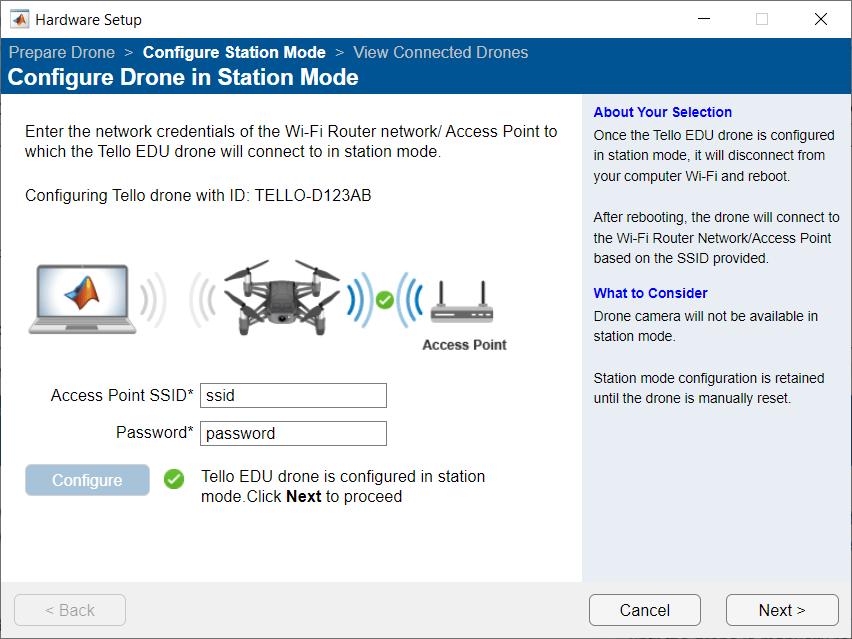
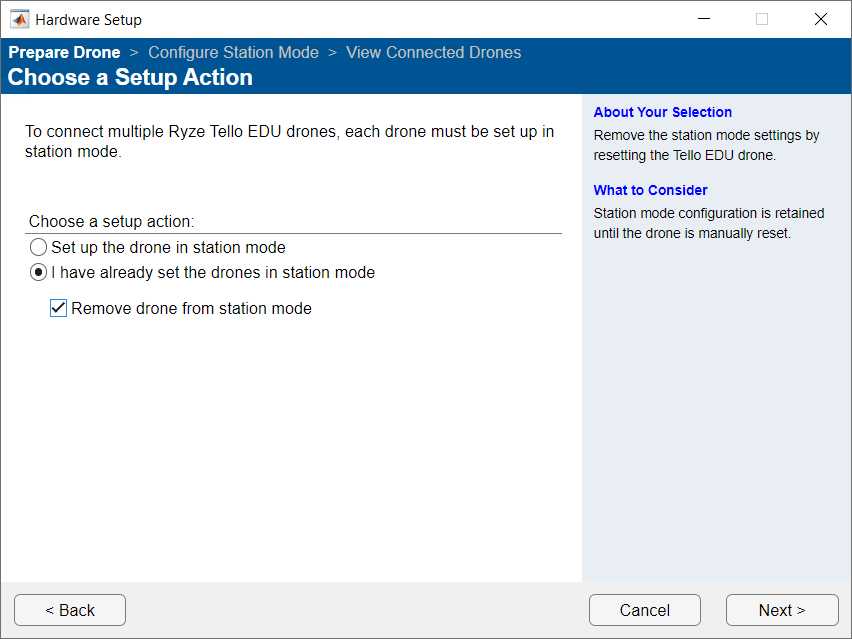

Configure Multiple Ryze Tello drones
The setup screen provides a unified interface to set and remove drones from station mode.
Set the Drone in Station Mode
On the MATLAB® command line, type the command:
A Setup Multi Drone Connections window opens. Click on Next.ryzesetup

On the Choose a Setup Action window, choose Set up the drone in station mode and click Next.

On the Prepare Tello EDU Drone follow instructions to switch on the drone, set up the drone Wi-Fi® password and connect your computer to the drone Wi-Fi network. Click Next. For information on how to set up the password, see Ryze Manual.

Note
Security Considerations: To prevent unauthorized access of your drones, set a secure password for the drone Wi-Fi network.
MATLAB will display any Ryze Tello EDU drone connected to your computer. If MATLAB does not automatically detect your drone, click Detect on the Detect Tello Drones window. The setup screen, by default, does not proceed to the next screen until you set the password for the detected drone. You may select I understand the risks of connecting over an unsecured Wi-Fi network to proceed, without setting a password, but it is best practice to set a password. Follow the instruction on the step
3to set the drone password.
On the Configure Drone in Station Mode window, enter the Access point SSID and Password and click Next.

Note
Security Considerations: To prevent unauthorized access of drones, follow these steps.
Use a dedicated private router network when configuring the drone in station mode.
Restrict router network access to computers with trusted IP addresses.
Disconnect or power off the router if you detect unauthorized access and to prevent the drone from crossing your visible range.
On the Configure More Drones window, you can choose to configure more drones, by repeating the previous steps.
After you finish configuring your drone, you can view the drones connected to your Wi-Fi network on the Drones in Network window.

On the Hardware Setup Complete window, click Finish.
Remove Ryze Tello Drone from Station Mode
On the MATLAB command line, type the command:
A Setup Multi Drone Connections window opens. Click Next.ryzesetup

On the Choose a Setup Action window, select I have already setup drones in station mode, and then select Remove drone from station mode options. Click Next.
Follow the on-screen instructions to reset the drone to factory mode, removing it from station mode. Click Finish.